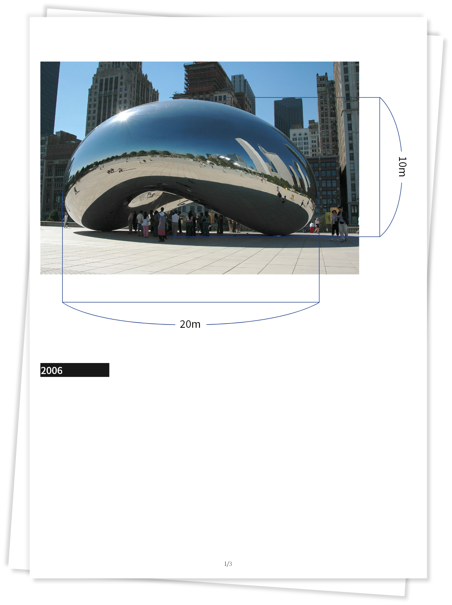

‘Cloud Gate’는 일리노이주 시카고에 위치한 밀레니엄 파크를 대표하는 작품입니다. 168개의 스테인레스 판을 용접하여 만들었지만 외관상으로 눈에 보이는 이음새 없을 정도로 섬세하게 제작되었습니다. 카푸어는 ‘수은’에서 영감을 받아 ‘Cloud Gate’를 제작하게 되었습니다. ‘Cloud Gate’의 표면은 시카고의 스카이라인을 반사하고 왜곡시켜 아래에서 ‘Cloud Gate’의 천장을 바라보았을 때 마치 하늘로 통할 수 있는 출입구를 보는 듯한 기분을 들게 합니다.

‘Descension’은 물의 잠재력을 탐구하여 물질과 과정에 대한 집중적인 연구의 결과입니다. 26피트의 지름의 공간속에 있는 액체는 지속적으로 소용돌이 치며, 마치 지구의 깊은 곳으로 빨려 들어가는 것 같은 경험을 선사하게 됩니다. ‘Descension’은 보는이에게 카푸어의 추상적 형태를 사회적, 문화적, 신화적인 차원에서 상상하게끔 합니다.
베네치아에 위치한 산 조르조 마조레 성당의 인상적인 돔 아래에는 하얀 원통이 있습니다. 침묵 속에서 갑자기 공기가 뿜어져나옵니다. 하얀 원통위로 공기가 쏟아져 나오기 시작하고 공기는 점점 휘어 원뿔 모양이 되어 하늘로 솟구칩니다. 카푸어는 비물질을 오브젝트로 만들자는 생각으로 ‘Ascension’을 만들게 되었습니다.


작품